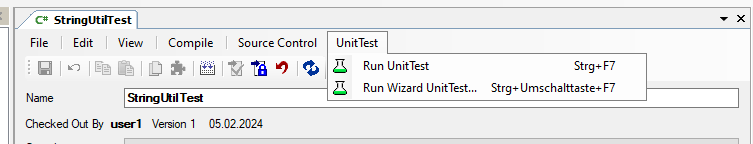

Unit-Tests
Note
Dieses Feature steht aktuell nur im Haus von Nissen & Velten zur Verfügung.
Über einen Befehl Run UnitTest ist es möglich eine spezielle Application zu starten, die dafür vorgesehen ist, Unit-Tests auszuführen.
Beim Start der Application mit F5 zieht das aktuell eingestellte Setting.
Für die Unit-Tests gibt es parallel ein eigenes "aktuelles Unit-Test-Setting" gespeichert. Darin kann z.B. eine eigene Application mit einem anderen Start-Workflow verwendet werden, damit ein direkter Einstieg in die Unit-Test-UI gewährleistet wird.
Es können (und müssen) aber auch alle anderen Einstellungen wie z.B. DB-Connections und Runtime-Lizenzen definiert werden.
Im Run-Wizard können diese Settings ganz normal, wie alle anderen Setting auch, gespeichert und geladen werden.

Im Menu Compile gibt es 2 Menu-Items für den Start dieser Application:
Run UnitTest: Startet die Application mit dem aktuellen Unit-Test-Setting.
Run Wizard UnitTest...: Es öffnet sich der Run-Wizard und es kann das aktuellen Unit-Test-Setting konfiguriert werden. Beim ersten Aufruf wird das aktuelle (normale) Setting kopiert.
In den Designer-Fenstern für Components und CodeFiles gibt es im Menu UnitTest dieselben Befehle. Damit können gezielt diese Tests dieser konkreten Klasse ausgeführt werden.

Note
Diese Befehle sind nur bei entsprechend markierten Test-Klassen aktiv.
Bei Code-Files muss der Name mit ...Test enden. z.B. StringUtilTest.
Bei Components muss am Anfang der Description ein [Test...]-Attribut stehen.
[TestClass]
In dieser Klasse werden Tests für Abc abgebildet
...
Der FullName der Component bzw. des CodeFiles wird als Envrionment-Variable NVUnitTestItem an die Application übergeben.
Diese Variable kann in der Application an jeder beliebigen Stelle ausgewertet werden:
string testClassFullName = Environment.GetEnvironmentVariable("NVUnitTestItem");